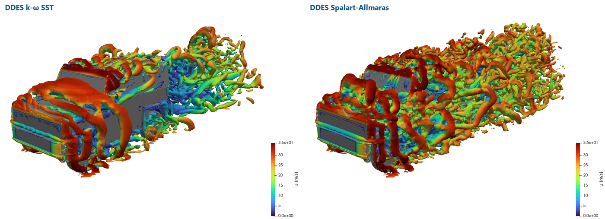
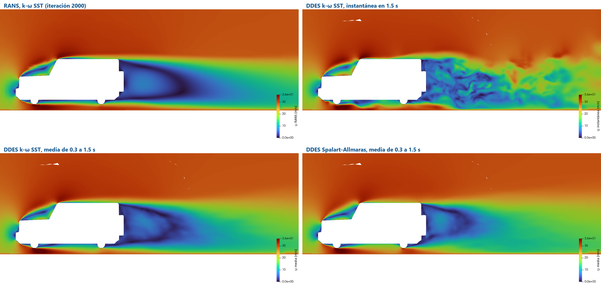

RANS gives one steady flow; the wake of the Jimny is not steady. A detached-eddy simulation resolves the large eddies of the wake and keeps RANS next to the wall. Two DDES models, started from the RANS solution, say how much changes, and what it costs.
OpenFOAM · Flujo incompresible · Tutorial 3.7
El Jimny con DDES: dos modelos contra el RANS
El RANS da un flujo estacionario; la estela del Jimny no lo es. Una simulación de remolinos separados (DDES) resuelve los remolinos grandes de la estela y deja RANS junto a la pared. Dos modelos DDES, arrancados de la solución RANS, dicen cuánto cambia el resultado, y cuánto cuesta.
OpenFOAM · Inkompressible Strömung · Tutorial 3.7
Der Jimny mit DDES: zwei Modelle gegen RANS
RANS liefert eine stationäre Strömung; der Nachlauf des Jimny ist nicht stationär. Eine Detached-Eddy-Simulation löst die großen Wirbel des Nachlaufs auf und behält RANS an der Wand. Zwei DDES-Modelle, gestartet aus der RANS-Lösung, zeigen, wie viel sich ändert und was es kostet.
Estimated reading: 50 min (plus about a day of computing per model)Lectura estimada: 50 min (y alrededor de un día de cálculo por modelo)Lesedauer: ca. 50 min (dazu etwa ein Tag Rechenzeit je Modell)Level: undergraduateNivel: licenciaturaNiveau: BachelorVerified on OpenFOAM 12 (blueCFD-Core 2024) and ParaView 5.11.2Verificado en OpenFOAM 12 (blueCFD-Core 2024) y ParaView 5.11.2Geprüft mit OpenFOAM 12 (blueCFD-Core 2024) und ParaView 5.11.2
Full English translation in preparation. Each section below carries a summary of its content; the complete text, figures and tables are available in the Spanish version, which the ES button above selects.
Explain what RANS, LES, DES and DDES solve; turn a steady RANS case into a transient DDES case; choose the time step with the Courant number; average in time and read a fluctuating drag coefficient; compare two DDES models with RANS.
The problem
A wake that does not stand still
The steady RANS solution of the Jimny (Cd = 0.564) hides the unsteady wake behind its vertical rear. Does a DDES change the drag, and does the model matter?
The theory
RANS, LES and the hybrid between them
Filtered versus averaged equations; the DES length scale and the shielding of the boundary layer (F2 in SST-DES, fd in SA-DDES); the Courant number; time averages, fluctuations and the Strouhal number; the Q criterion.
Step by step
From the RANS solution to two DDES runs
Two cases next to the RANS case: jimny-ddes (k-ω SST DES) clones the processor folders of the RANS run; jimny-ddes-sa (Spalart-Allmaras DDES) also creates nuTilda and changes the wall function of nut. Each ./Allrun runs 1.5 s of flow in about a day; then tramos, foamPostProcess -func Q and ParaView.
The case
What changes in the dictionaries
The six files that change from RANS to DDES: momentumTransport, controlDict, fvSchemes, fvSolution, functions and the initial fields.
Worked example
RANS, SST-DES and SA-DDES side by side
Mean drag: RANS 0.564, SST-DES 0.576 ± 0.010, SA-DDES 0.689 ± 0.011. The DDES drag fluctuates by ±0.047 to ±0.056; the mean recirculation behind the tail is 1.98 m (RANS), 1.70 m (SST-DES) and 1.17 m (SA-DDES). The 20% gap between the two DDES models is pressure drag spread over the hood, roof, sides and rear: with Spalart-Allmaras the shear layers from the front edges break into resolved eddies almost at once, with SST they stay smooth sheets until the wake. Each DDES run costs ten to twelve times the RANS run.
Common errors
Changing the turbulence model of a case
Spalart-Allmaras without nuTilda (the run stops); nutkWallFunction with Spalart-Allmaras (the run does not stop); the free-stream turbulence copied from the RANS case (wrong, but it was not the cause of the higher drag); functions in two places; the Gradient filter of ParaView on this mesh.
Suggested exercise
How long is long enough?
With the two force histories, repeat the averages with blocks of 0.1, 0.2 and 0.4 s and decide whether 1.2 s of averaging is enough.
Sources
References
Spalart (2009) on detached-eddy simulation; Strelets (2001) and Menter, Kuntz and Langtry (2003) on SST-DES; Spalart et al. (2006) on DDES; Yazdani (2015) on the DrivAer with SA-DDES; Hunt, Wray and Moin (1988) on the Q criterion.
Objetivos de aprendizaje
Qué se debe poder hacer al terminar
Los tutoriales 3.1 a 3.4 calcularon el Jimny con RANS estacionario, y el 3.6 concluyó que lo que más mueve su \(C_D\) está en la estela. Esta guía calcula la estela de otra manera: con una simulación transitoria que resuelve los remolinos grandes, arrancada de la solución RANS, con dos modelos distintos.
Explicar qué resuelven RANS, LES, DES y DDES, y por qué DDES es lo que cabe en una computadora de escritorio.
Convertir un caso RANS estacionario en uno transitorio: modelo, esquemas, algoritmo, paso de tiempo y promedios.
Elegir el paso de tiempo con el número de Courant.
Leer un \(C_D\) que oscila: su media, su fluctuación y su error con el guion tramos.
Comparar dos modelos DDES —k-ω SST y Spalart-Allmaras— entre sí y con el RANS.
Qué hace falta. El caso RANS del Jimny ya calculado en $FOAM_RUN/jimny y reconstruido (tutorial 3.2: reconstructPar -latestTime), los dos casos de esta guía y tiempo de cómputo: en la laptop de la serie (8 núcleos, 16 GB) cada corrida tardó alrededor de 25 horas. Las dos no conviene correrlas al mismo tiempo en la misma computadora: se reparten los núcleos y cada una tarda el doble.
El problema
Una estela que no se está quieta
El cálculo del 3.3 es estacionario: el \(C_D\) = 0.564 es el de un flujo que no cambia con el tiempo. Pero detrás de la cara trasera del Jimny, plana y vertical, el aire se desprende y forma remolinos que la corriente arrastra: la estela cambia con el tiempo. El RANS no los calcula: los promedia de antemano, dentro del modelo de turbulencia, y lo que queda es una estela media, quieta y simétrica.
El 3.6 encontró que las decisiones del cálculo mueven el \(C_D\) del Jimny de 3 a 9 %, casi todo por la estela, y que la literatura del DrivAer reporta que un cálculo no estacionario predice mejor la presión de la base. La pregunta de esta guía: si se calculan los remolinos de la estela, ¿cambia el arrastre del Jimny? ¿Y cambia con el modelo?
La teoría
RANS, LES y el híbrido entre los dos
Promediar o filtrar
RANS resuelve las ecuaciones promediadas: la velocidad es su media, y todo el efecto de la turbulencia —remolinos de todos los tamaños— lo pone el modelo, en forma de viscosidad turbulenta \(\nu_t\). LES (large-eddy simulation) resuelve las ecuaciones filtradas: calcula los remolinos más grandes que el filtro, de un tamaño \(\Delta\) del orden de la celda, y sólo modela los más pequeños. Es mucho más fiel en una estela, pero cerca de una pared los remolinos importantes son diminutos, y resolverlos en un vehículo a 100 km/h pediría miles de millones de celdas.
DES (detached-eddy simulation) es el híbrido (Spalart, 2009): RANS en la capa límite, pegada a la pared, y LES lejos de ella, donde los remolinos se han desprendido. Un solo modelo hace las dos cosas comparando dos escalas de longitud: la del modelo RANS, \(l_{RANS}\), y la de la malla, \(C_{DES}\Delta\):
Donde la malla es más fina que la escala de la turbulencia, la escala más chica es la de la malla: el modelo baja su viscosidad y deja que el cálculo resuelva los remolinos. El riesgo es que una malla fina dentro de la capa límite haga lo mismo antes de tiempo y la capa se desprenda donde no debe. DDES (delayed DES) lo evita con una función que «protege» la capa límite y retrasa el cambio a LES (Spalart et al., 2006):
con \(f_d \approx 0\) dentro de la capa límite (RANS) y \(f_d \approx 1\) fuera (DES). OpenFOAM 12 trae los dos modelos que compara esta guía:
SpalartAllmarasDDES: el DDES original, sobre el modelo de una ecuación de Spalart-Allmaras (la de \(\tilde\nu\), nuTilda). Es el del tutorial motorBike de OpenFOAM.
kOmegaSSTDES: el DES sobre el k-ω SST que el Jimny usa en RANS (Strelets, 2001; Menter, Kuntz y Langtry, 2003); con su opción por omisión, FSST 2, la capa límite la protege la función \(F_2\) del propio SST, que hace el papel de \(f_d\).
El paso de tiempo
Un cálculo que resuelve remolinos tiene que seguirlos en el tiempo. La regla es que en un paso el aire no avance más de una celda, lo que mide el número de Courant:
\[ Co = \frac{|U|\,\Delta t}{\Delta x} \tag{3} \]
Con \(\Delta t\) = 1·10⁻⁴ s (el del tutorial motorBike), en las celdas del nivel 6 que rodean al Jimny (\(\Delta x\) = 1/64 m = 1.56 cm) y a 27.78 m/s, \(Co\) = 0.18. El máximo de toda la malla, que OpenFOAM escribe en cada paso, llegó a 1.17 (k-ω SST) y 1.40 (Spalart-Allmaras): poco más de 1 en unas cuantas celdas, que los dos cálculos toleraron sin problema. Así, 1.5 s de flujo —el aire recorre 11 veces el largo del Jimny— son 15 000 pasos.
Lo que se reporta de un cálculo transitorio
El \(C_D\) de un DDES no se asienta: oscila, y lo que se reporta es su media en el tiempo, a partir de que la estela olvidó el arranque, y su fluctuación, la desviación estándar. Los campos también se promedian mientras corre el cálculo (fieldAverage): la velocidad media UMean es la que se compara con la del RANS. La oscilación tiene una frecuencia propia \(f\), que se escribe sin dimensiones con el número de Strouhal:
\[ St = \frac{f\,\sqrt{A}}{U_\infty} \tag{4} \]
con la raíz del área frontal como longitud. Para ver los remolinos se usa el criterio Q(Hunt, Wray y Moin, 1988): un remolino es una región donde la rotación del fluido domina sobre su deformación,
donde \(\boldsymbol{\Omega}\) y \(\mathbf{S}\) son las partes antisimétrica y simétrica del gradiente de velocidad. Una superficie de \(Q\) constante y positivo dibuja los tubos de los remolinos.
Paso a paso
De la solución RANS a dos corridas DDES
Los dos casos se descomprimen en $FOAM_RUN, junto al caso RANS: jimny-ddes (k-ω SST) y jimny-ddes-sa (Spalart-Allmaras). Ninguno trae malla: la toman del caso RANS. En la terminal de blueCFD-Core:
Leer el caso.cd $FOAM_RUN/jimny-ddes y abrir en Notepad2 el Allrun y los cinco diccionarios (sección El caso). El Allrun copia de ../jimny lo que falta en constant y system, clona la malla de cada carpeta processor* y convierte su última iteración (la 2000) en el tiempo 0 del DDES.
Correr el k-ω SST../Allrun. Responde con
Tiempo 0 del DDES: la iteración 2000 de ../jimny
Running foamRun in parallel on …/jimny-ddes using 8 processes
Vigilarlo desde otra terminal, como en el 3.2: foamMonitor -l "postProcessing/residuals(p,U,k,omega)/0.0001/residuals.dat" (la carpeta lleva el nombre del primer paso, 0.0001), o mirar el \(C_D\) con tail postProcessing/forceCoeffs1/0/forceCoeffs.dat. La terminal del Allrun no se cierra: cerrarla mata los procesos. Cada 0.05 s de flujo (500 pasos, unos 50 minutos) se escribe una carpeta de tiempo en cada processor*.
Correr el Spalart-Allmaras cuando termine el primero: cd ../jimny-ddes-sa y ./Allrun. Éste parte de la solución RANS reconstruida (../jimny/2000): la convierte a texto, crea nuTilda, cambia la función de pared de nut, fija la nuTilda de la corriente libre con setFields (error 3) y reparte otra vez la malla con decomposePar.
El \(C_D\) medio, en cada caso: cp ../jimny/tramos . y ./tramos 0.3 2000: desde 0.3 s, en tramos de 2000 pasos (0.2 s). El guion imprime los tiempos de cada tramo.
Los remolinos: mpirun -np 8 foamPostProcess -solver incompressibleFluid -func Q -time 1.5 -parallel escribe el campo Q en el último tiempo.
Verlo en ParaView sin reconstruir: paraFoam, y en el lector cambiar Case Type a Decomposed Case (tutorial 3.5). Un corte en \(y\) = 0 coloreado por U y por UMean; un Contour de Q = 2000 coloreado por U, con los parches del Jimny.
¿Por qué no arrancar del reposo? El DDES necesita una estela desarrollada para empezar a promediar. Arrancar de la solución RANS ahorra el tiempo de formarla desde cero: aun así, los primeros 0.3 s —el aire recorre unas dos veces el largo del Jimny— se descartan, porque la estela pasa de la forma suave del RANS a la turbulenta del DDES.
El caso
Lo que cambia en los diccionarios
La malla, las fronteras del túnel, el suelo que se mueve, las ruedas que giran y las fuerzas son las del caso RANS. Cambia lo que tiene que ver con el tiempo y con la turbulencia (tabla 1).
Archivo
RANS (k-ω SST)
DDES con k-ω SST
DDES con Spalart-Allmaras
constant/momentumTransport
RAS, kOmegaSST
LES, kOmegaSSTDES, cubeRootVol
LES, SpalartAllmarasDDES, cubeRootVol
system/controlDict
2000 iteraciones (deltaT 1)
1.5 s con Δt = 1·10⁻⁴ s (15 000 pasos)
lo mismo
system/fvSchemes
steadyState; linearUpwind limitado
backward; LUST para U
lo mismo, con nuTilda en lugar de k y ω
system/fvSolution
SIMPLE con relajación
PIMPLE: 1 pasada y 3 correcciones de presión, sin relajar
lo mismo
system/functions
fuerzas, y⁺, residuos, corte, líneas de corriente
fuerzas y fuerza lateral en cada paso; promedios en el tiempo desde 0.3 s
lo mismo
0/
condiciones iniciales uniformes
la última iteración RANS (k, ω, U, p, nut)
la última iteración RANS, más nuTilda (copia de nut, con 3ν en la entrada y antes del vehículo) y nut con nutUSpaldingWallFunction
Tabla 1.Del RANS al DDES: lo que cambia. Los archivos del caso RANS del Jimny (tutoriales 3.1 y 3.2) y los de los dos casos DDES. Lo que no aparece —la malla, las fronteras, la geometría, el reparto entre procesos, las fuerzas— no cambia.
constant/momentumTransport
FoamFile
{
format ascii;
class dictionary;
object momentumTransport;
}
// * * * * * * * * * * * * * * * * * * * * * * * * * * * * * * * * * * * * * //
// DDES del Jimny: RANS (k-omega SST) junto a la pared y LES lejos de ella. kOmegaSSTDES con FSST = 2 (valor por
// omisión) protege la capa límite con la función F2 del SST: es la forma «retardada» (DDES) del modelo.
// La receta es la del tutorial motorBike de OpenFOAM 12 (lesFiles), que usa SpalartAllmarasDDES; aquí se usa la
// variante SST para arrancar de los campos k y omega de la corrida RANS sin crear nuTilda.
simulationType LES;
LES
{
model kOmegaSSTDES;
delta cubeRootVol; // tamaño del filtro: raíz cúbica del volumen de la celda
cubeRootVolCoeffs
{
deltaCoeff 1;
}
turbulence on;
printCoeffs on;
}
// ************************************************************************* //
simulationType LES y el modelo; cubeRootVol es la \(\Delta\) de la ecuación (1). El de Spalart-Allmaras es igual, con SpalartAllmarasDDES.
system/fvSchemes
FoamFile
{
format ascii;
class dictionary;
object fvSchemes;
}
// * * * * * * * * * * * * * * * * * * * * * * * * * * * * * * * * * * * * * //
// Esquemas transitorios: los de motorBike/lesFiles (OpenFOAM 12) con k y omega en lugar de nuTilda.
ddtSchemes
{
default backward; // segundo orden en el tiempo
}
gradSchemes
{
default Gauss linear;
grad(U) cellLimited Gauss linear 1;
grad(k) cellLimited Gauss linear 1;
grad(omega) cellLimited Gauss linear 1;
}
divSchemes
{
default none;
div(phi,U) Gauss LUST unlimitedGrad(U); // 75 % lineal + 25 % linearUpwind: poca disipación
div(phi,k) Gauss limitedLinear 1;
div(phi,omega) Gauss limitedLinear 1;
div((nuEff*dev2(T(grad(U))))) Gauss linear;
}
laplacianSchemes
{
default Gauss linear limited corrected 0.33;
}
interpolationSchemes
{
default linear;
}
snGradSchemes
{
default limited corrected 0.33;
}
wallDist
{
method meshWave;
}
// ************************************************************************* //
backward es de segundo orden en el tiempo. LUST mezcla 75 % de interpolación lineal (precisa, pero inestable sola) con 25 % de linearUpwind: un LES necesita poca disipación numérica, porque la disipación es el trabajo del modelo y, si los esquemas disipan de más, amortiguan los remolinos que el cálculo debía resolver.
PIMPLE con una sola pasada por paso y tres correcciones de presión es el algoritmo PISO: con \(Co \lesssim 1\) no hace falta relajar ni iterar dentro del paso.
system/functions
FoamFile
{
format ascii;
class dictionary;
object functions;
}
// * * * * * * * * * * * * * * * * * * * * * * * * * * * * * * * * * * * * * //
// Funciones del DDES del Jimny: las fuerzas en cada paso y los promedios en el tiempo a partir de 0.3 s, cuando la
// estela ya olvidó el arranque desde la solución RANS (2.3 largos del vehículo).
#include "forceCoeffs" // Cd, Cl, Cl(f), Cl(r) en cada paso
#includeFunc residuals(p, U, k, omega)
fuerzas // la fuerza total, para ver la fuerza lateral (la estela de lado a lado)
{
type forces;
libs ("libforces.so");
writeControl timeStep;
writeInterval 1;
patches (jimnyGroup);
rho rhoInf;
rhoInf 1;
CofR (1.755 0 0);
}
promediosTiempo
{
type fieldAverage;
libs ("libfieldFunctionObjects.so");
startTime 0.3; // startTime en OpenFOAM 12: timeStart (de la versión ESI) se ignora sin aviso
writeControl writeTime;
fields
(
U
{
mean yes;
prime2Mean yes;
}
p
{
mean yes;
prime2Mean yes;
}
);
}
// ************************************************************************* //
promediosTiempo acumula, desde 0.3 s (startTime; véase el problema 6 de la sección de errores), la media de U y de p y sus fluctuaciones (UPrime2Mean, pPrime2Mean), que se escriben con cada carpeta de tiempo. fuerzas guarda la fuerza total en cada paso, para la fuerza lateral, que forceCoeffs no da.
Ejemplo resuelto
RANS, SST-DES y SA-DDES lado a lado
Enunciado: con las dos corridas DDES de 1.5 s, comparar con el RANS el \(C_D\) medio, su fluctuación, el levante por eje, la estela media y el costo.
1. El arrastre en el tiempo
Figura 1.El arrastre en el tiempo. Los dos DDES arrancan de la iteración 2000 del RANS (la línea discontinua). Durante los primeros 0.3 s la estela pasa de la forma suave del RANS a la turbulenta. Desde ahí el \(C_D\) del k-ω SST oscila alrededor de su media, con una componente lenta de varias décimas de segundo; el del Spalart-Allmaras sube y se queda alrededor de 0.7.
Los dos DDES arrancan del \(C_D\) del RANS, caen en los primeros pasos, mientras la presión se reacomoda al nuevo modelo, y durante 0.3 s van juntos (figura 1). Después se separan: el de k-ω SST oscila un poco arriba del RANS y el de Spalart-Allmaras sube hasta alrededor de 0.7. La fluctuación, desde 0.3 s, es de ±0.047 (k-ω SST) y ±0.056 (Spalart-Allmaras), 15 y 19 veces la del RANS (±0.003). Con ./tramos 0.3 2000:
$ ./tramos 0.3 2000
Tiempo 0.3001 a 1.5 s, 6 tramos de 2000 pasos
tramo tiempo [s] Cd
1 0.3001-0.5 0.5478
2 0.5001-0.7 0.5673
3 0.7001-0.9 0.5620
4 0.9001-1.1 0.5794
5 1.1001-1.3 0.6197
6 1.3001-1.5 0.5817
Promedio de los tramos 0.5763
Del menor al mayor tramo 0.5478 a 0.6197
Error estándar de la media 0.0100
(k-ω SST). Los tramos van de 0.548 a 0.620: la oscilación más lenta dura del orden de un tramo, y el error estándar, ±0.010, es por eso una estimación optimista (la lección del 3.6). Con Spalart-Allmaras los tramos van de 0.650 a 0.722, con el primero abajo de los demás: su estela tardó más en olvidar el arranque. Empezar el promedio en 0.5 s lo subiría a 0.697, poco frente a la diferencia entre los modelos.
La oscilación más marcada del \(C_D\) tiene unos 3.3 Hz con k-ω SST (\(St\) ≈ 0.19) y 5.0 Hz con Spalart-Allmaras (\(St\) ≈ 0.28). Con 1.2 s de registro, la resolución en frecuencia es de 1/1.2 s ≈ 0.8 Hz: las dos son aproximadas.
Figura 2.La fuerza lateral. \(C_S = F_y/(\tfrac12\rho U_\infty^2 A)\), de la función fuerzas. En el RANS es prácticamente cero; en los DDES la estela empuja al Jimny de un lado a otro.
La fuerza lateral (figura 2) promedia casi cero en los dos —el Jimny es simétrico—, pero oscila: ±0.026 y ±0.033 en \(C_S\). Es la estela que se desprende de un lado y del otro.
2. Los números
Cálculo
\(C_D\)
Fluctuación
\(C_{L,f}\)
\(C_{L,r}\)
Recirculación
RANS, k-ω SST
0.564 ± 0.001
0.003
0.171
−0.099
1.98 m
DDES, k-ω SST
0.576 ± 0.010
0.047
0.143
−0.104
1.70 m
DDES, Spalart-Allmaras
0.689 ± 0.011
0.056
0.282
−0.212
1.17 m
Tabla 2.Los tres cálculos del Jimny. RANS: iteraciones 1001 a 2000 (tutorial 3.3); DDES: de 0.3 a 1.5 s. El ± del \(C_D\) es el error estándar de la media (en el DDES, con tramos de 0.2 s: el guion tramos); la fluctuación es la desviación estándar del \(C_D\) instantáneo. La recirculación es el largo de la zona con \(U_x < 0\) detrás de la cola, en el plano medio, con la velocidad media.
Contra el RANS, el \(C_D\) medio cambia +2 % con k-ω SST y +22 % con Spalart-Allmaras. La fuerza de arrastre a 100 km/h pasa de 636 N a 650 y 777 N (\(\rho\) = 1.2 kg/m³). La diferencia entre los dos DDES, 0.113, es unas diez veces el error estándar de cada media: no es ruido, es el modelo. Con Spalart-Allmaras también se duplica el levante del eje delantero.
3. Dónde está la diferencia
Casi toda es arrastre de presión: el de fricción apenas cambia. Integrando la presión media sobre el vehículo por franjas (el guion arrastre_zonas_ddes.py de la carpeta de exploración), de cada 100 unidades de arrastre de presión que Spalart-Allmaras agrega sobre k-ω SST, 25 están en el cofre y el parabrisas, 50 en el techo y los costados y 30 en la cola; en la cara del frente casi no hay diferencia (−6, un poco menos). La diferencia no viene de un punto: viene de lo que pasa en todo el vehículo detrás de los bordes del frente, que es lo que muestran los remolinos.
4. Los remolinos

Figura 3.Los remolinos. Isosuperficie \(Q\) = 2000 s⁻² en el instante 1.5 s, coloreada por |U|, con el k-ω SST (izquierda) y el Spalart-Allmaras (derecha). Con k-ω SST, láminas lisas que nacen en los bordes del frente envuelven el cofre y los costados, y los remolinos aparecen en la estela; con Spalart-Allmaras, esas capas se rompen casi desde el borde y el techo y los costados quedan cubiertos de remolinos.
La isosuperficie \(Q\) = 2000 s⁻² (figura 3) enseña lo que el RANS no tiene, y la diferencia entre los dos modelos. Con k-ω SST, el aire que se desprende de los bordes del frente forma láminas lisas que envuelven el cofre y los costados hasta la cola: ahí el modelo sigue, en buena parte, en modo RANS, y los remolinos resueltos aparecen hasta la estela. Con Spalart-Allmaras, esas mismas capas se rompen en remolinos casi desde el borde, y el techo y los costados quedan cubiertos de ellos. Es la «zona gris» de los modelos híbridos (Spalart, 2009): en una capa que se desprende, el paso de turbulencia modelada a resuelta no es inmediato, y cada modelo lo da en un lugar distinto. Esos remolinos mezclan más: cambian la presión en todo el vehículo y acortan la burbuja de detrás.
Figura 4.Los remolinos en movimiento. Isosuperficie \(Q\) = 2000 s⁻² coloreada por |U|, de 1.5 a 1.7 s, un cuadro cada 0.001 s y 33 veces más lento que el flujo; k-ω SST arriba, Spalart-Allmaras abajo.
Las figuras 4 y 5 muestran lo mismo en movimiento. Para hacerlas, cada corrida siguió 0.2 s más, de 1.5 a 1.7 s, con una función surfaces que cada 10 pasos (0.001 s) guarda en formato VTK sólo dos superficies: el plano medio y la isosuperficie \(Q\) = 2000, con la velocidad; los campos completos se escriben sólo al final. Los 201 cuadros de cada modelo, armados con ParaView sin ventana y ffmpeg, se reproducen a 30 por segundo: el flujo va 33 veces más lento que en la realidad. Con k-ω SST, la capa que se desprende del borde del frente pasa sobre el cofre y el techo como una franja lisa, y los remolinos nacen en la cola; con Spalart-Allmaras, la misma capa es desde el borde una fila de remolinos que ruedan sobre el techo. Las tres vistas, con los dos modelos, están en un vídeo complementario de 1:21.
Figura 5.El plano medio en movimiento. |U| en \(y\) = 0, de 0 a 36 m/s, en el mismo intervalo; k-ω SST arriba, Spalart-Allmaras abajo. La camioneta es su superficie en 3D, y el plano la corta por la mitad.
5. La estela media

Figura 6.La velocidad en el plano medio. |U| en \(y\) = 0, de 0 a 36 m/s. Arriba, el RANS (iteración 2000) y el DDES k-ω SST en el instante 1.5 s; abajo, la velocidad media de 0.3 a 1.5 s de los dos DDES. La instantánea está llena de remolinos; las medias se parecen al RANS, con la zona lenta detrás de la cola más corta.
En el plano medio (figura 6), la velocidad instantánea del DDES está llena de remolinos; su media, en cambio, se parece a la estela del RANS. La zona de flujo invertido detrás de la cola mide 1.98 m en el RANS, 1.70 m con k-ω SST y 1.17 m con Spalart-Allmaras. Es la regla de los cuerpos romos: la burbuja más corta va con más succión en la cara trasera y más arrastre.
6. El costo
Cálculo
Pasos
Segundos por paso
Horas
Courant máximo
RANS
2 000 iteraciones
3.6
2.0
—
DDES, k-ω SST
15 000
5.9
24.7
1.17
DDES, Spalart-Allmaras
15 000
5.1
21.2
1.40
Tabla 3.Lo que cuesta. En la laptop de la serie (8 núcleos, 16 GB), con 8 procesos. El RANS es el solver del tutorial 3.2, sin la malla.
Cada corrida DDES costó de 10 a 12 veces el RANS, con la misma malla. Spalart-Allmaras resuelve una ecuación de turbulencia en lugar de dos, y cada paso le cuesta 14 % menos.
7. ¿Cuál de los dos?
No hay una medición del Jimny para decidirlo, y los dos son defendibles: los dos son DDES, con la misma malla, los mismos esquemas y el mismo paso de tiempo. Lo que sí se puede decir es cuánto vale cada número. Un DDES no es, por sí mismo, más exacto que un RANS: con esta malla, que pone dos capas de celdas en la pared y celdas de 1.6 cm alrededor del vehículo, el resultado depende de qué modelo decide dónde empiezan los remolinos. La forma de decidir es la del 3.5: correr los dos modelos en un vehículo con medición de túnel (práctica sugerida, pregunta 4).
Resultado: el \(C_D\) medio del Jimny es 0.564 con RANS, 0.576 ± 0.010 con DDES k-ω SST (+2 %) y 0.689 ± 0.011 con DDES Spalart-Allmaras (+22 %). El k-ω SST queda a 2 % del RANS; el Spalart-Allmaras, que deshace en remolinos las capas que se desprenden del frente, da 20 % más. Con la misma malla, el modelo pesa más que cualquiera de las decisiones del 3.6.
Errores frecuentes
Cambiar el modelo de turbulencia de un caso
Los seis salieron al preparar esta guía.
1. Spalart-Allmaras sin nuTilda
Si se cambia sólo momentumTransport a SpalartAllmarasDDES, el solver se detiene al construir el modelo:
Remedio: crear 0/nuTilda. El Allrun de jimny-ddes-sa lo copia de nut: lejos de la pared, \(\tilde\nu \approx \nu_t\).
2. nutkWallFunction con Spalart-Allmaras
El caso RANS usa nutkWallFunction, que calcula \(\nu_t\) en la pared a partir de k. Spalart-Allmaras no resuelve k, pero OpenFOAM la estima a partir de \(\nu_t\), y el cálculo corre sin un solo aviso: es el error más peligroso, porque no se ve. Remedio: una función de pared que sólo use la velocidad, nutUSpaldingWallFunction, la del tutorial motorBike.
3. La turbulencia de la entrada, copiada del RANS
La primera corrida de Spalart-Allmaras tomó la nuTilda de la entrada igual al \(\nu_t\) del caso RANS, \(k/\omega\) = 0.0025 m²/s, unas 170 veces la viscosidad del aire, y corrió sin un aviso. En k-ω SST esa turbulencia decae en los 10 m de aire antes del vehículo; en Spalart-Allmaras, lejos de las paredes, casi no decae, porque el término que destruye \(\tilde\nu\) crece con \((\tilde\nu/d)^2\) y la distancia a la pared, \(d\), es grande. A 30 cm del frente del Jimny, \(\nu_t\) era 6.0·10−5 m²/s con k-ω SST (4 veces \(\nu\)) y 1.7·10−3 con Spalart-Allmaras (112 veces): el aire que le llegaba al vehículo era mucho más «viscoso».
El \(C_D\) de esa corrida, de 0.3 a 0.72 s, promedió 0.665, 15 % más que con k-ω SST, y la entrada parecía la culpable: la corrida se detuvo y se repitió con la entrada corregida. En el mismo intervalo, la corrida corregida dio 0.675: casi lo mismo. La turbulencia de la entrada estaba mal, pero no explicaba la diferencia, que es del modelo (sección Ejemplo resuelto). Una causa razonable se comprueba antes de darla por buena; aquí costó medio día de cálculo.
Remedio: la turbulencia de la corriente libre se elige para cada modelo; no se copia de otro. Para Spalart-Allmaras, \(\tilde\nu_\infty\) = 3\(\nu\) = 4.5·10⁻⁵ m²/s en la entrada y, con setFields, en todo el aire antes del vehículo, que es lo que hace el Allrun de jimny-ddes-sa.
4. Las funciones en dos lugares
El caso del Jimny tiene sus funciones en system/functions. Si además se escribe un bloque functions en controlDict, OpenFOAM usa sólo el primero y lo dice al arrancar:
Both "system/functions" and "system/controlDict/functions" found, the latter will be ignored.
Remedio: un solo lugar. Los casos de esta guía usan system/functions.
5. El filtro Gradient de ParaView
Calcular Q en ParaView con el filtro Gradient (casilla Compute QCriterion) sobre los datos en los puntos llenó el registro de «vtkWedge … Jacobian inverse not found» —las cuñas degeneradas que snappyHexMesh deja junto a la pared— y, con el campo de 1.5 s, ParaView se cerró. Remedio: que lo calcule OpenFOAM, con foamPostProcess -func Q (paso 6 de la receta), y en ParaView sólo dibujar el Contour.
6. timeStart en vez de startTime
La primera versión de esta guía escribía timeStart 0.3; en promediosTiempo, como en la versión ESI de OpenFOAM (openfoam.com). OpenFOAM 12 no conoce esa palabra, no avisa y promedia desde el tiempo 0, con el arranque incluido. Se descubre en el archivo que fieldAverage escribe en cada carpeta de tiempo:
processor0/1.5/uniform/promediosTiempoProperties
U
{
totalIter 15000;
totalTime 1.5;
}
Con el promedio desde 0.3 s, totalTime sería 1.2. Remedio:startTime 0.3;, que es lo que traen ahora los dos casos. Si ya se corrió con timeStart, no hace falta repetir el cálculo: con un paso de tiempo fijo, la media de 0.3 a 1.5 s sale de las dos medias acumuladas, \(\bar u_{0.3\text{–}1.5} = (15000\,\bar u_{1.5} - 3000\,\bar u_{0.3})/12000\). Así se corrigieron, el 29 de octubre de 2026, la estela media y el reparto del arrastre de esta guía; la burbuja de Spalart-Allmaras resultó 14 % más corta que con el promedio desde 0. El \(C_D\) no cambia: sale de forceCoeffs, no de los promedios.
Práctica sugerida
¿Cuánto es suficiente?
¿Cuánto es suficiente?
Enunciado. Con las historias de fuerzas de las dos corridas, decidir si 1.2 s de promedio bastan para dar el \(C_D\) del Jimny con dos cifras, y llenar la tabla 4.
Condiciones. No hace falta calcular nada nuevo: el guion tramos lee postProcessing/forceCoeffs1/0/forceCoeffs.dat de cada caso.
El procedimiento, en corto
En jimny-ddes: ./tramos 0.3 1000, ./tramos 0.3 2000 y ./tramos 0.3 4000 (tramos de 0.1, 0.2 y 0.4 s).
Lo mismo en jimny-ddes-sa.
Abrir el forceCoeffs.dat en una hoja de cálculo y medir el periodo de la oscilación lenta del \(C_D\).
Registro de resultados
Modelo
Tramo
Número de tramos
\(C_D\)
Error estándar
k-ω SST
0.2 s (2000 pasos)
6
0.5763
0.0100
k-ω SST
0.1 s (1000 pasos)
k-ω SST
0.4 s (4000 pasos)
Spalart-Allmaras
0.2 s (2000 pasos)
Tabla 4.Registro de la práctica. Con los forceCoeffs.dat de las dos corridas. El primer renglón es el de esta guía (k-ω SST, tramos de 0.2 s).
Preguntas que orientan la lectura
¿Crece el error estándar al alargar los tramos? ¿Qué dice eso del tramo de 0.2 s que usa esta guía?
Con tres tramos de 0.4 s, ¿es confiable el error estándar? (El 3.6, error 3.)
¿La diferencia entre los \(C_D\) de los dos modelos es mayor que la incertidumbre de cada media?
¿Qué haría falta para decidir cuál de los dos modelos está más cerca del vehículo real? ¿Cuánto tardaría hacerlo con el DrivAer del 3.5 y la receta del Jimny?
Fuentes
Referencias
Hunt, J. C. R., Wray, A. A. y Moin, P. (1988). Eddies, streams, and convergence zones in turbulent flows. En Studying Turbulence Using Numerical Simulation Databases II (Report CTR-S88, pp. 193–208). Center for Turbulence Research.
Menter, F. R., Kuntz, M. y Langtry, R. (2003). Ten years of industrial experience with the SST turbulence model. En Turbulence, Heat and Mass Transfer 4 (pp. 625–632). Begell House.
Spalart, P. R. (2009). Detached-eddy simulation. Annual Review of Fluid Mechanics, 41, 181–202.
Spalart, P. R., Deck, S., Shur, M. L., Squires, K. D., Strelets, M. Kh. y Travin, A. (2006). A new version of detached-eddy simulation, resistant to ambiguous grid densities. Theoretical and Computational Fluid Dynamics, 20, 181–195.
Strelets, M. (2001). Detached eddy simulation of massively separated flows (AIAA Paper 2001-0879). AIAA.
Yazdani, R. (2015). Steady and unsteady numerical analysis of the DrivAer model (tesis de maestría 2015:34). Chalmers University of Technology.
Las cifras son de las dos corridas DDES de 1.5 s y de la corrida RANS del tutorial 3.2, hechas en la misma computadora con blueCFD-Core 2024 (OpenFOAM 12) y 8 procesos, en octubre de 2026; las imágenes, de ParaView 5.11.2 sin ventana (pvbatch) sobre esas corridas.
Lernziele
Was Sie danach können sollten
Vollständige deutsche Übersetzung in Vorbereitung. Jeder Abschnitt enthält eine Zusammenfassung; der vollständige Text mit Abbildungen und Tabellen liegt in der spanischen Fassung vor, die über die Schaltfläche ES oben erreichbar ist.
Erklären, was RANS, LES, DES und DDES lösen; einen stationären RANS-Fall in einen instationären DDES-Fall umwandeln; den Zeitschritt über die Courant-Zahl wählen; zeitlich mitteln und einen schwankenden Widerstandsbeiwert lesen; zwei DDES-Modelle mit RANS vergleichen.
Das Problem
Ein Nachlauf, der nicht stillsteht
Die stationäre RANS-Lösung des Jimny (Cd = 0,564) verdeckt den instationären Nachlauf hinter seinem senkrechten Heck. Ändert eine DDES den Widerstand, und spielt das Modell eine Rolle?
Die Theorie
RANS, LES und der Hybrid dazwischen
Gefilterte gegen gemittelte Gleichungen; die DES-Längenskala und die Abschirmung der Grenzschicht (F2 bei SST-DES, fd bei SA-DDES); die Courant-Zahl; Zeitmittel, Schwankungen und die Strouhal-Zahl; das Q-Kriterium.
Schritt für Schritt
Von der RANS-Lösung zu zwei DDES-Rechnungen
Zwei Fälle neben dem RANS-Fall: jimny-ddes (k-ω SST DES) klont die Prozessorordner der RANS-Rechnung; jimny-ddes-sa (Spalart-Allmaras DDES) erzeugt zusätzlich nuTilda und ändert die Wandfunktion von nut. Jedes ./Allrun rechnet 1,5 s Strömung in etwa einem Tag; danach tramos, foamPostProcess -func Q und ParaView.
Der Fall
Was sich in den Dictionaries ändert
Die sechs Dateien, die sich von RANS zu DDES ändern: momentumTransport, controlDict, fvSchemes, fvSolution, functions und die Anfangsfelder.
Durchgerechnetes Beispiel
RANS, SST-DES und SA-DDES nebeneinander
Mittlerer Widerstand: RANS 0,564, SST-DES 0,576 ± 0,010, SA-DDES 0,689 ± 0,011. Der DDES-Widerstand schwankt um ±0,047 bis ±0,056; das mittlere Rückströmgebiet hinter dem Heck ist 1,98 m (RANS), 1,70 m (SST-DES) und 1,17 m (SA-DDES) lang. Der Unterschied von 20 % zwischen den beiden DDES-Modellen ist Druckwiderstand, verteilt auf Motorhaube, Dach, Seiten und Heck: Mit Spalart-Allmaras zerfallen die Scherschichten der vorderen Kanten fast sofort in aufgelöste Wirbel, mit SST bleiben sie bis zum Nachlauf glatte Schichten. Jede DDES-Rechnung kostet das Zehn- bis Zwölffache der RANS-Rechnung.
Häufige Fehler
Das Turbulenzmodell eines Falls wechseln
Spalart-Allmaras ohne nuTilda (die Rechnung bricht ab); nutkWallFunction mit Spalart-Allmaras (die Rechnung bricht nicht ab); die Turbulenz der Anströmung aus dem RANS-Fall kopiert (falsch, aber nicht die Ursache des höheren Widerstands); Funktionen an zwei Stellen; der Gradient-Filter von ParaView auf diesem Netz.
Übungsvorschlag
Wie lang ist lang genug?
Mit den zwei Kraftverläufen die Mittelwerte mit Blöcken von 0,1, 0,2 und 0,4 s wiederholen und entscheiden, ob 1,2 s Mittelung genügen.
Quellen
Literatur
Spalart (2009) zur Detached-Eddy-Simulation; Strelets (2001) und Menter, Kuntz und Langtry (2003) zu SST-DES; Spalart et al. (2006) zu DDES; Yazdani (2015) zum DrivAer mit SA-DDES; Hunt, Wray und Moin (1988) zum Q-Kriterium.